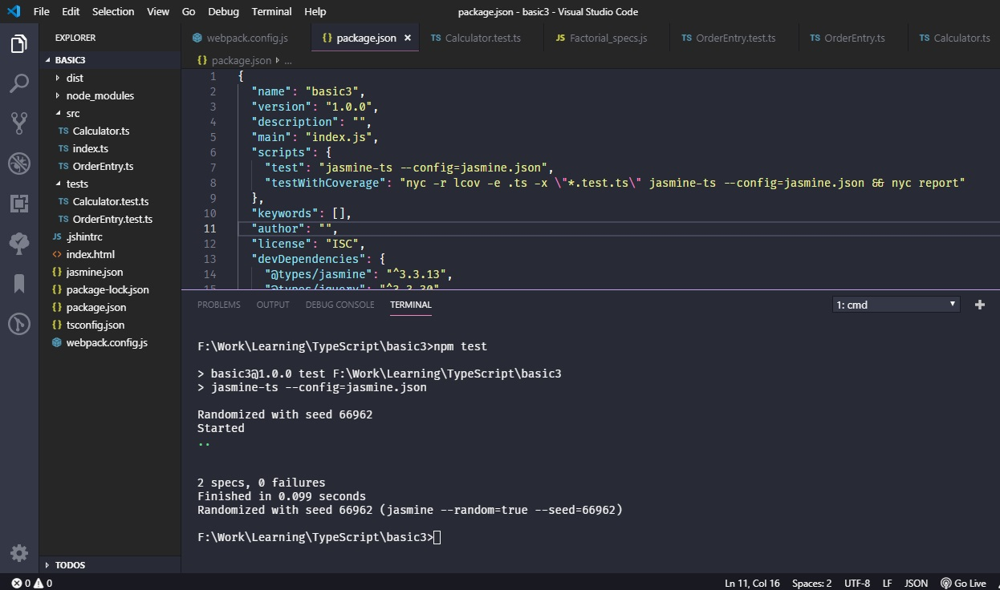

TypeScript Setup
- Create an empty directory called 'sample'.
-
Run following command to create 'package.json'.
D:\sample\npm init -y
-
Run following command to create 'tsconfig.json'
D:\sample\tsc --init
To enable source map, uncomment "sourceMap": true," line -
We need to add 'ts-loader' as develpment dependency.
D:\sample\npm install --save-dev ts-loader
this will add following entry in package.json"devDependencies": { "ts-loader": "^6.0.4" } - Create a directory 'src' in 'sample' folder. This folder will contain all the typescript source files.
-
create 'index.ts' file in src folder. Add following code snippet in the file.
class Person { constructor(private name: string) { } show() { console.log("My name is " + this.name); } } var abhay = new Person("Abhay"); abhay.show(); -
Create 'webpack.config.js' in 'sample' folder. Add follwing configuration in the file.
const path = require('path'); module.exports = { mode: 'development', entry: './src/index.ts', devtool: 'inline-source-map', module: { rules: [{ test: /\.tsx?$/, use: 'ts-loader', exclude: /node_modules/ }] }, resolve: { extensions: ['.tsx', '.ts', '.js'] }, output: { filename: 'bundle.js', path: path.resolve(__dirname, 'dist') } }; -
Make sure you have webpack and typescript installed globally. If not, run following commands.
D:\sample\npm intall -g webpack --verbose D:\sample\npm install -g typescript --verbose -
Webpack needs typescript module to transpile files. We need to link global typescript module to this project. To do that, run following command,
D:\sample\npm link typescript
-
Now you can run 'webpack' command to build the project.
D:\sample\webpack
this will create 'dist' folder in sample directory. -
Suppose, we want to just test class/function without transpiling entire source, we can install ts-node globally. ts-node will execute typescript
source directly.
D:\sample\ts-node src/index.ts
-
If you want to use jquery,
D:\sample\npm install --save-dev @types/jquery
-
Unit Testing with Jasmine
Create new directory 'tests' in root folder Create a new test file called 'Calculator.test.ts'import Calculator from '../src/Calculator'; describe('calculate', function () { it('add', function () { let result = Calculator.Sum(5, 2); expect(result).toBe(6); }); }); /* In src / Calculator.ts add following code, */ export default class calculator { static Sum(a: number, b: number): number { let c = a + b; return c; } static Difference(a: number, b: number): number { let c = a - b; return c; } }D:\sample\npm i -D jasmine jasmine-ts nyc ts-node typescript D:\sample\npm i -D @types/jasmineIn package.json add following configuration
Add jasmine.json at root directory"scripts": { "test": "jasmine-ts --config=jasmine.json", "testWithCoverage": "nyc -r lcov -e .ts -x \"*.test.ts\" jasmine-ts --config=jasmine.json && nyc report" }{ "spec_dir": "tests", "spec_files": ["**/*[tT]est.ts"] } -
package.json will look similar to this,
To run the tests,{ "name": "basic3", "version": "1.0.0", "description": "", "main": "index.js", "scripts": { "test": "jasmine-ts --config=jasmine.json", "testWithCoverage": "nyc -r lcov -e .ts -x \"*.test.ts\" jasmine-ts --config=jasmine.json && nyc report" }, "keywords": [], "author": "", "license": "ISC", "devDependencies": { "@types/jasmine": "^3.3.13", "@types/jquery": "^3.3.30", "jasmine": "^3.4.0", "jasmine-ts": "^0.3.0", "nyc": "^14.1.1", "ts-loader": "^6.0.4" } }D:\sample\npm test
- Folder structure will look similar to this, 
-
Unit Testing with Jest
-
Install these packages as development dependencies.
npm install --save-dev jest --verbose
npm install --save-dev ts-jest --verbose
npm install --save-dev @types/jest --verbose
-
Add jestconfig.json file in the root directory.
{ "transform": { "^.+\\.(t|j)sx?$": "ts-jest" }, "testRegex": "(/tests/.*|(\\.|/)(test|spec))\\.(jsx?|tsx?)$", "moduleFileExtensions": ["ts", "tsx", "js", "jsx", "json", "node"], "coverageDirectory": "./coverage/", "collectCoverage": true } -
In package.json add test command.
{ "name": "ss", "private": true, "version": "0.0.0", "type": "module", "scripts": { "test": "jest --config jestconfig.json", "dev": "vite", "build": "tsc && vite build", "preview": "vite preview" }, "devDependencies": { "@types/jest": "^28.1.7", "jest": "^28.1.3", "ts-jest": "^28.0.8", "typescript": "^4.6.4", "vite": "^3.0.7" }, "dependencies": { "abhay-charts": "^1.0.3" } } -
In src folder, add common.ts file with following content.
export const sum = (a: number, b: number) => { return a + b; }; export const multiply = (a: number, b: number) => { return a * b; }; -
Create tests folder, add common.test.ts. Add following code.
import { multiply, sum } from "../src/common"; describe("addition", () => { it("checking 2+5", () => { expect(sum(2, 5)).toBe(7); }); it("testing 56+3", () => { expect(sum(56, 3)).toBe(59); }); }); describe("multiply", () => { it("56 x 3 = 168", () => { expect(multiply(56, 3)).toBe(168); }); }); -
To test application, run following command.
npm run test
You will see output similar to this, - Add coverage folder entry in .gitignore file.
-
Install these packages as development dependencies.